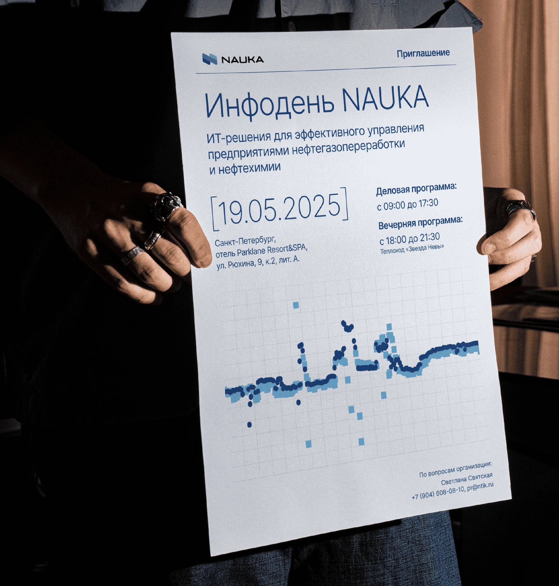
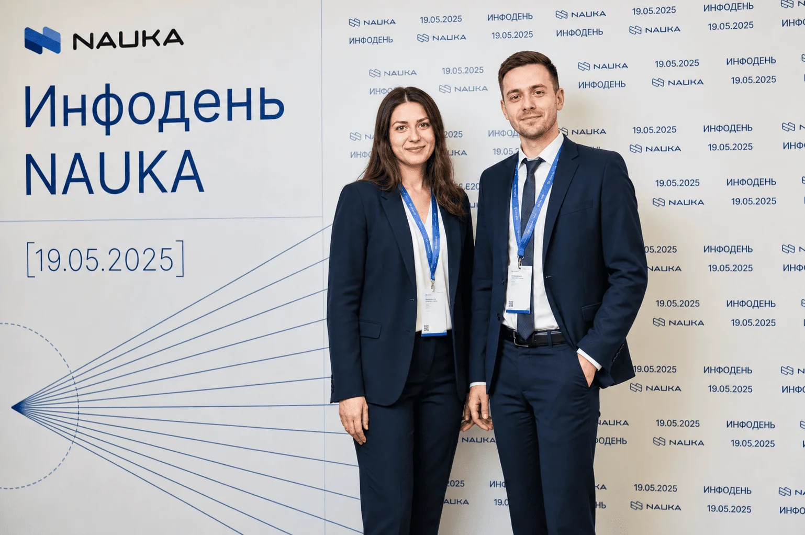
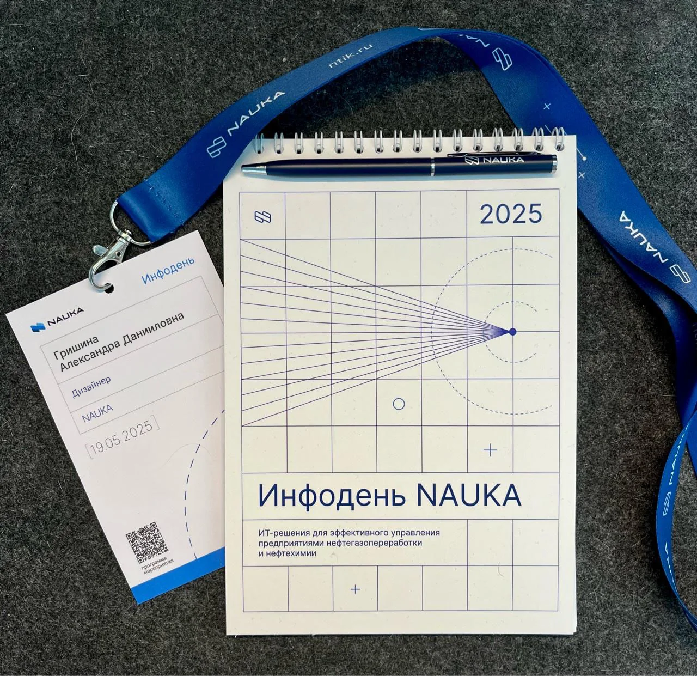
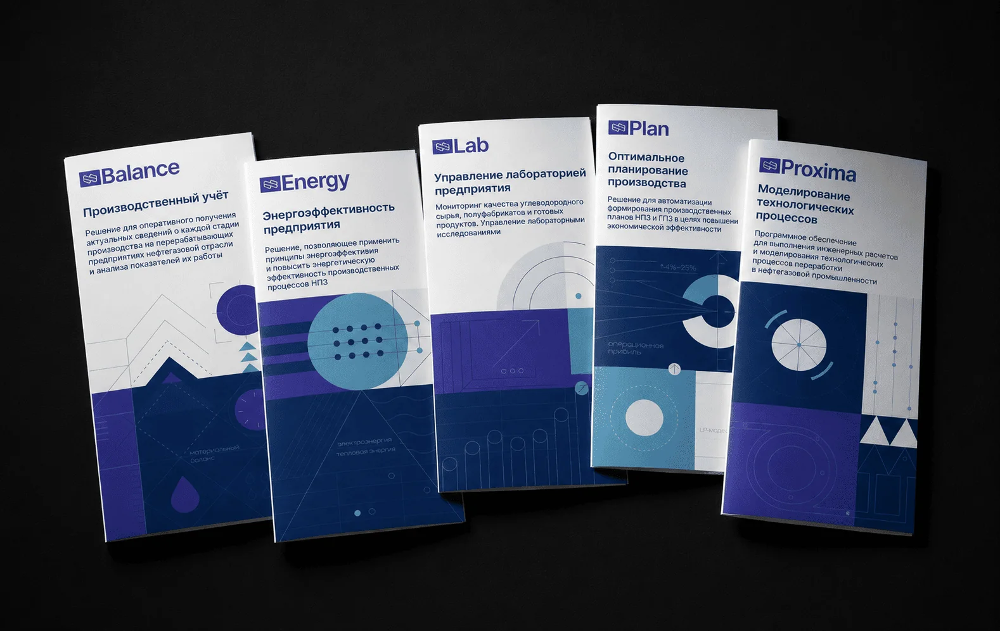
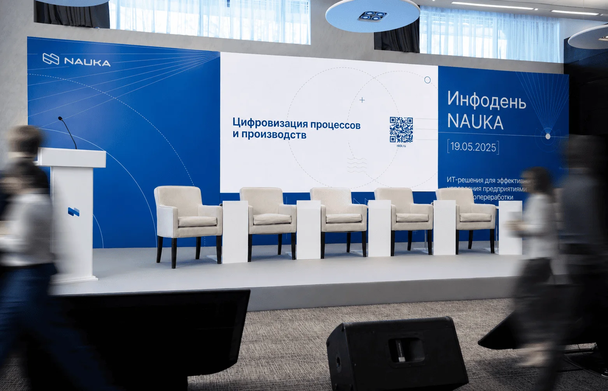

Бейджи, фирменные ленты, блокнот и ручка собраны в единую систему материалов.

[о проекте]
Единый образ делового события
Ежегодная конференция объединяет представителей нефтегазовой промышленности. Визуальная система связала деловую программу, пространство площадки и коммуникацию с участниками.
[концепция]
Инженерная эстетика blueprint
Стиль отражает подход, при котором цифровая трансформация начинается с идеи, точного расчёта и системы. Сине-белая графика объединяет технологичность, экспертизу и развитие отрасли.
Цветовое кодирование помогает различать участников, организаторов и спикеров.
Для продуктов компании подготовлена серия информационных евро-буклетов.
Графика LED-экрана создаёт акцент на сцене и не спорит с презентациями спикеров.




[результат]
Система на всех точках контакта
Материалы поддерживают участника на разных этапах мероприятия и сохраняют цельный, узнаваемый образ NAUKA — от приглашения до оформления сцены.
следующий проектФанзин «Переток»
→